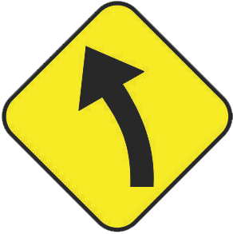
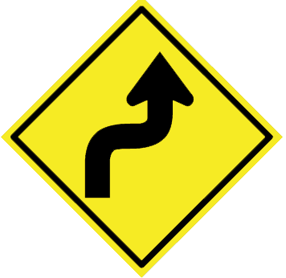
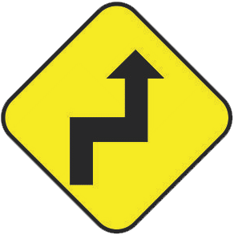

Curva
Se utiliza para indicar curvas a la derecha o izquierda con una curvatura menor a 90 grados.

Curva cerrada
Se utiliza para indicar curvas a la derecha o izquierda con una curvatura mayor a 90 grados.

Camino sinuoso
Se utiliza para indicar la presencia de dos o más curvas inversas en el camino.

Curva sinuosa
Se utiliza para indicar dos vueltas continuas que van en dirección contraria.

Contracurva
Se utiliza para indicar la presencia de dos curvas continuas en donde la primera es cerrada.

Cruce
Se utiliza para indicarel cruce de dos caminos. La línea más ancha señala el camino principal mientras las angosta es el camino secundario.